The Mamertines
2026-10-13 · jottel
Hello everyone, and welcome to our new Italian Developer Diary. Today, we present to you the Mamertines. The Mamertines are probably among the most famous mercenary groups of ancient history, not because of what they did, but rather for being the reason the First Punic War (264 – 241 BC) began in the first place. The relevance of their action is elevated by the historian Polybios of Megalopolis (ca. 200 – 120 BC), who essentially starts his work on “how Rome became the greatest power ever known to man” with an explanation of the Mamertine affairs. The Mamertines were Campanians who adopted that name after taking over the Greek city of Messene (Messina). Polybios’ narrative starts *in medias res*. The young and newly established king of Syracuse, Hiero II (ca. 306 – 215 BC), had disaffected mercenaries in the army that elected him. He sent them against the Mamertines at Messene to purge his army of that seditious section. From their own success, however, the Mamertines grew bolder and more aggressive. He thus trained his levies, met the Mamertines on the Mylaian plain and defeated them, captured their leaders and besieged Messene (Polyb. I.9). After seeing their only allies, the Campanians in Rhegion, slaughtered by the Romans, the Mamertines had no one else to turn to and sent delegations to both the Carthaginians on Sicily, and to the Romans, asking the latter for help as “kindred people” (Polyb. I.10). When the Romans crossed over under the command of consul Appius Claudius in 264 BC, the Mamertines dislodged the Carthaginians from the citadel, after they had already been led in as allies and the Mamertines allied to the Romans instead. Appius Claudius defeated the Syracusans and Carthaginians in front of the Messenian walls, and thus, the First Punic War kicked off (Polyb. I.11).
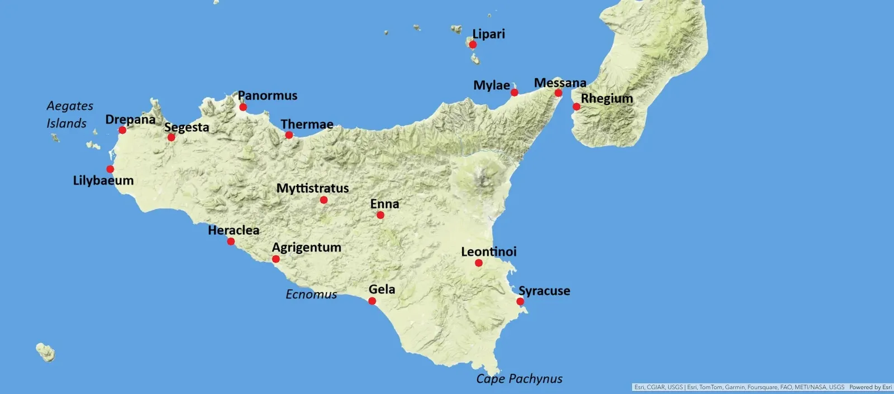
At this point in most retellings of the First Punic War, the history of the Mamertines ends and is discretely swept under the rug. But what happened to those rowdy mercenaries, who slaughtered half a city to take it for themselves and then cowardly turned to two major powers, when they were finally about to get their comeuppance? The honest truth is: not much. They remained pretty safe under Roman rule. So let us tell you the long story. The occupation of cities by Oscan peoples was nothing new. In these DDs, we have talked about how the Sabines conducted “sacred spring” campaigns, sending out their youth to occupy new land. Thus, the Sabines occupied the cities of the “Aborigines” (Dion. Hal. I.14.6), co-ruled the early Roman Kingdom in the Roman tradition (Liv. I.13.6-8) and expanded down the Apennine slopes throughout Italy. Thus emerged the Picentes after following a woodpecker (picus), the Samnites after following a bull and the Hirpini following a wolf. The Campani conquered the Etruscan and Greek cities of Campania, like Capua and Cumae, and the Lucanians occupied Poseidonia, Laos and other Italiote cities in the south. These expansions didn’t stop in Italy.
After the Campanians had established themselves in the homonymous countryside in the last third of the 5th century BC, they sold their services to the warring factions of Sicily. 800 Campanians and 5.000 Libyans were dispatched by Carthage to the Athenians in order to help them in their war against Syracuse (Diod. XIII.44). In the Carthaginian wars against Sicilian cities, Campanian mercenaries complained to their employer that they weren’t rewarded enough for their accomplishments, and thus they were left behind when the Carthaginians abandoned the island (Diod. XIII.62.5). Consequently, a few years later, when Hannibal Mago was elected to finally conquer Sicily in 406 BC, the Carthaginians hired even more Campanians to fight the ones whom they had left behind (XIII.80.4). After Dionysios I (ca. 432 – 367 BC) made himself tyrant in 405 BC and concluded a peace with the Carthaginians, his tyrannical rule was immediately met with rebellions (404 BC). To deal with them, Dionysios wrote to the Campanian mercenaries who the Carthaginians had left as garrisons in Sicilian cities, promised them everything for their help and recruited 1.200 Campanian cavalrymen to slaughter the rebels (Diod. XIV.9.2-3). Not wanting to deal with their fickleness afterwards, the tyrant sent them away with gifts. They promptly travelled to Entella, persuaded the inhabitants to let them in, slaughtered all the men of military age, 'married' the wives and took possession of the city (XIV.9.8-9). This may sound too familiar to be true, if it weren’t for Entellan coinage of the 4th century BC depicting pretty archaeologically accurate Oscan armour and the name “KAMΠANΩN” (kampanon):
Sicily, Entella AE Uncia. Circa 343-339 BC. Campanian helmet left, KAMΠANΩN / Horse galloping right, ENTEΛΛA. Virzi 947.
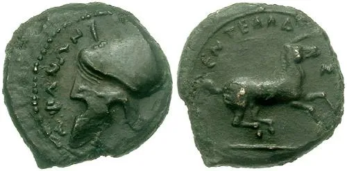
After a successul war against Naxos and Katane, Dionysios I also settled some Campanians in the latter, though they were later resettled to Etna (Diod. XIV.15.3; XIV.58.2). In 339 BC, these Campanians in Etna were “wiped out” by Timoleon of Corinth (411-337 BC). Continuing our Syracusan adventures, in 289 BC, the Syracusan tyrant Agathokles (361 – 289 BC) was poisoned by a certain Menon of Segesta. The Syracusans recovered their democratic government and then conducted a war against Menon, who was supported by the Carthaginians. He defeated the Syracusan army and a civil war broke out among the Syracusans, which ended in a white peace and an eviction of the mercenaries from the city (Diod XXI.18.1). They were received as friends and allies by the Messenians and invited into the city, where they slaughtered all the male citizens in the night, 'married' their wives and took possession of the city. They called it Mamertina after Mamertos – the Oscan version of Mars (Diod. XXI.18.2). The name is attested on inscriptions, as one was found in Messina, dated to c. 250 BC: ImIt Messana 4 = ST Me 1 and 3 (Now in Museo Regionale di Messina, old inv. 24; McDonald, Italy before Rome (2022), p. 120):
ϲτενιϲ καλινιϲ ϲταττιηιϲ μαραϲ πομπτιεϲ νιυμϲδιηιϲ μεδδειξ ουπϲενϲ εινειμ τωϝτο μαμερτινο αππελλουνηι ϲακορο
Stenis Kalinis, son of Stattis, (and) Maras Pompties, son of Niumsdis, meddiks [pl.], built (this), and the Mamertine touta. (It is) sacred to Apollo (*touta* is the Oscan term for a community/people)
They also minted coinage, depicting a heroically nude warrior or maybe even Mamers himself:
Mamertini, Messana, Sicily, AE pentonkion. 18mm, 210-200 BC. 4.12 g. Laureate head of Zeus right / MAMEΡTINΩN, Helmeted warrior standing right, wielding spear and holding shield on left arm. Π in right field. BMC 31; Calciati 51; Hoover HGC 858; McClean 2448; Särström 405-418.
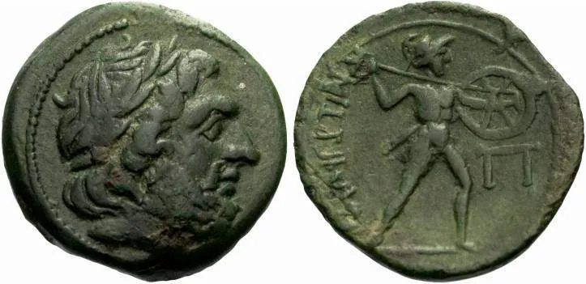
They did not remain alone for a long time though, because in 280 BC, Rome was at war with Pyrrhos of Epeiros. Fearing attacks on the Italiote cities in the south, Rome sent a Campanian legion to protect the city of Rhegion under Decius Vibellius (Liv. XXVIII.28.2 (4.000 men); Dion. Hal. XX.4-5 (800 Campanians, 400 Sidicini). You all know the spiel already: They slaughtered the male population, 'married' the women and took possession of the city. After Pyrrhos lost interest in Italy after the battles of Heraclea (280 BC) and Asculum (279 BC), he took interest in the war of the Sikeliote Greeks against Carthage. The latter allied to the Mamertines to prevent Pyrrhos from sailing over to the island, though this failed (Diod. XX.7.4). After a while, however, the Greeks perceived Pyrrhos as tyrannical. Some of them joined the Carthaginians, others the Mamertines (Plut. Pyrrh. XXIII.5). Thus, Pyrrhos’ Sicilian campaign was also unsuccessful and he returned to Italy. The Mamertines ambushed him on his way back with 10.000 men, killed two of his elephants and a number of men in his rearguard. One scene is almost straight out of a movie:
One of them ran forth far in advance of the rest, a man who was huge in body and resplendent in armour, and in a bold voice challenged Pyrrhus to come out, if he were still alive. This angered Pyrrhus, and wheeling round in spite of his guards, he pushed his way through them — full of wrath, smeared with blood, and with a countenance terrible to look upon, and before the Barbarian could strike dealt him such a blow on his head with his sword that, what with the might of his arm and the excellent temper of his steel, it cleaved its way down through, so that at one instant the parts of the sundered body fell to either side.
(Plut. Pyrrh. XXIV.2). Pyrrhos made it back to Italy, only to fight an unsuccessful battle against the Romans at Maleventum (275 BC) and retreating back to Greece (Plut. Pyrrh. XXV).
In the meantime, the Mamertines had expanded in Sicily, and the fragments of Diodoros imply that they had taken Mylai, Ameselon, Halaisa, Abakainon and Tyndaris, as king Hiero of Syracuse took these back one by one (Diod. XX.13.1-2). Near Messene, he fought against the Mamertine general Kios and his 8.000 infantry and 40(?) cavalry and defeated them. We know the alternate version in Polybios already. The Carthaginians, who were nearby on the island of Lipara quickly intervened to prevent the Mamertines from surrendering and established a garrison (XXII.13.2-8). After the Mamertines regained faith, due to the arrival of the Romans, they evicted the Carthaginians (XXII.13.8-9). In the rest of the war, Messene mainly served as a naval base for the Roman fleet against the Carthaginians and continued playing that role after the war. By the time we hear of Messene again, “Mamertines” is well-established as a name for the community. In Cicero’s famous speeches against Verres he outright refers to Messene as “the community of the Mamertines” (*civitatem Mamertinam*, Cic. Verr. II.13). The Messenian delegate C. Heius, whom he calls most venerated man of the city, obviously still bears an Oscan name (Cic. Verr. IV. 3; Salomies, The Nomina of the Samnites. A checklist (2012), p. 154). Verres was praised and protected by the Mamertine community, who were his clients. He freed them from their obligation in the Roman alliance treaty to provide a ship for the Roman fleet (Cic. Verr. V.50-51) and used Messene to store the stolen goods he robbed from all the other Sicilian communities (Cic. Verr. IV.151). The geographer Strabo emphasises the takeover by saying that the people of Messene by his time are called Mamertini rather than Messenii and their wine is not called “Messenian” but Mamertine, rivalling the best wines in Italy (Strab. VI.2.3). Even Pliny still calls the inhabitants of Messene “Mamertini”, who enjoy the rights of Roman citizens (Plin. NH. III.88).
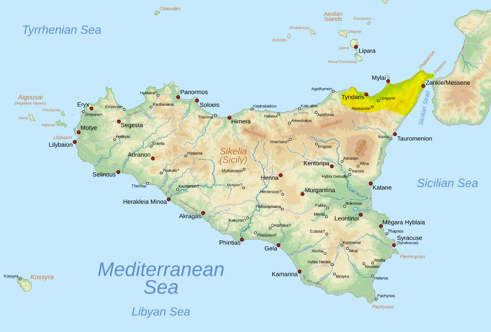
For their symbol, we made use of a pretty unique motif, a hound from some coinage they minted:
Mamertini, Messana, Sicily, AE20. 278-264 BC. 7.33 g. AΔΡANOY, helmeted head of Adranus left, wearing crested Corinthian helmet / MAMEΡTINΩN beneath hound standing right, Φ above. BMC 1; Hoover HGC 880; Calciati 20; SNG ANS 418.
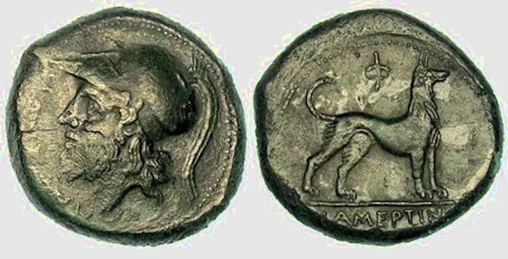
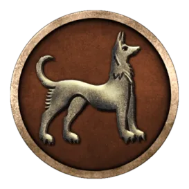
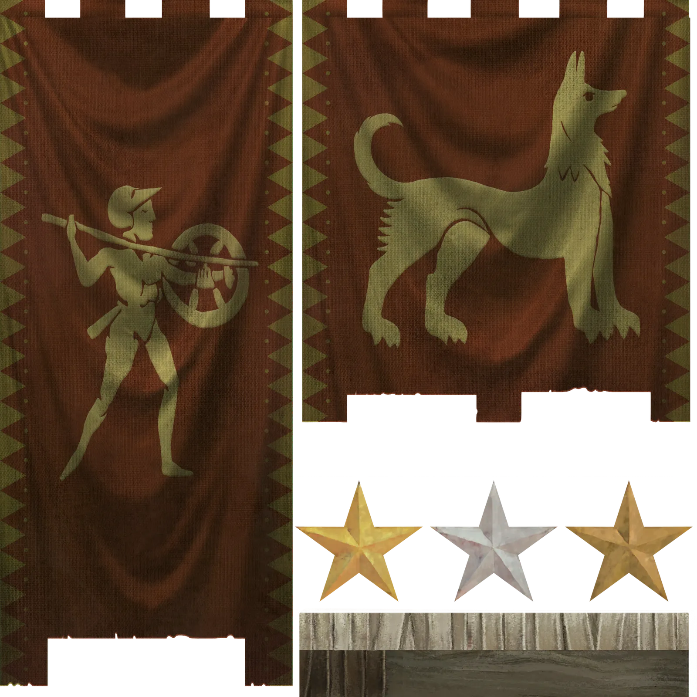
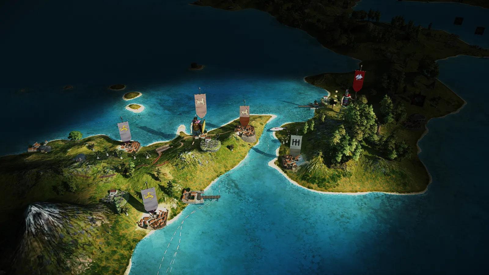
The Mamertines share their Campanian roster with the faction of Capua: https://discord.com/channels/714205632663912498/894286297802362931/1553092292523466846
Oscan Spearmen
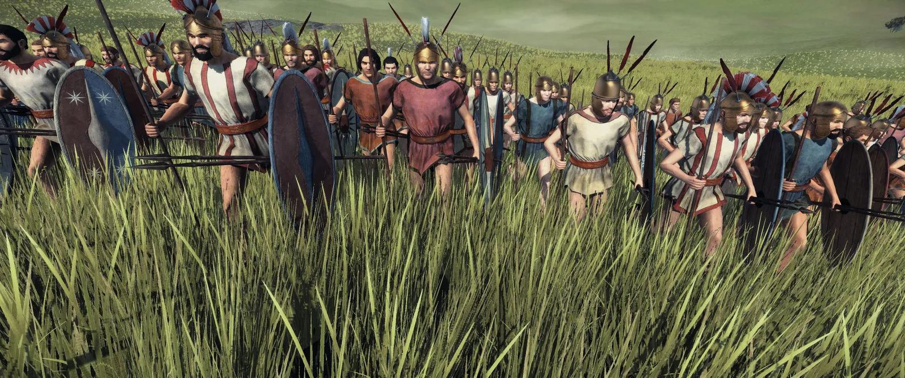
Campanian Thureophoroi
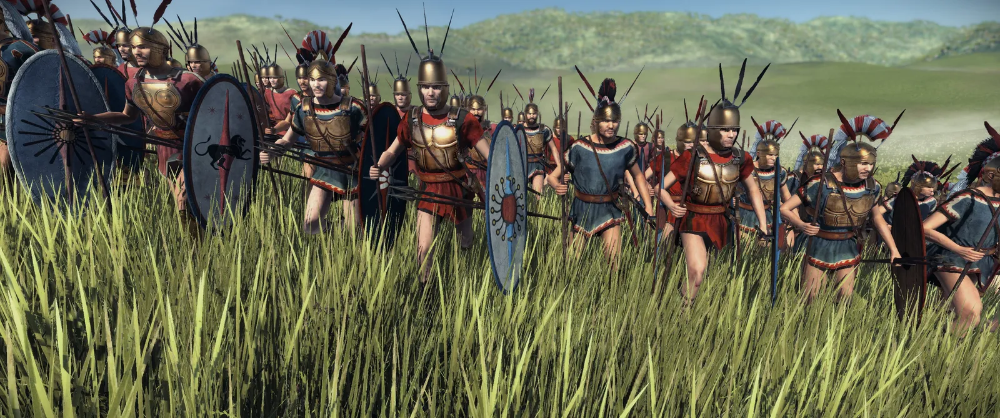
Campanian Hoplites
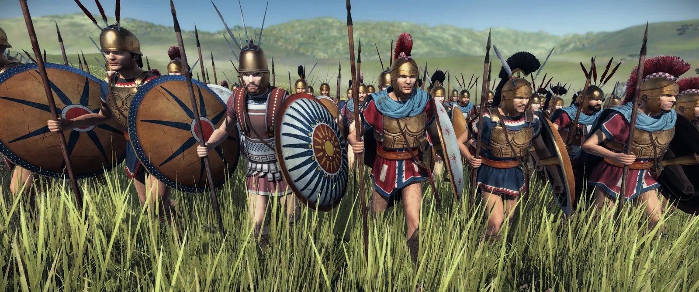
Campanian Javelinmen
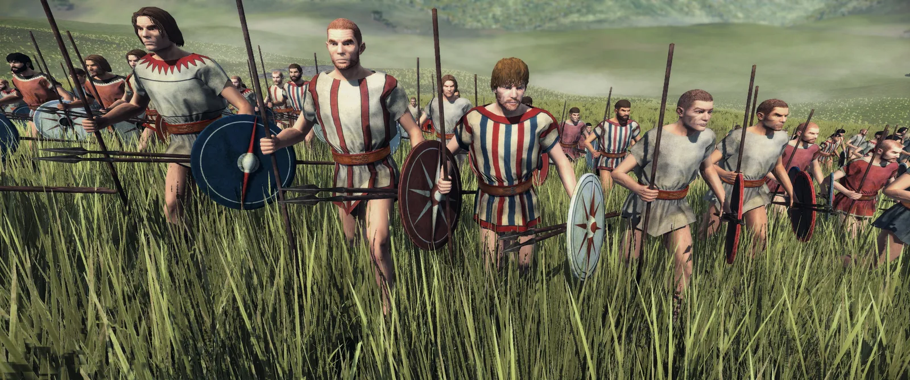
Oscan Cavalry
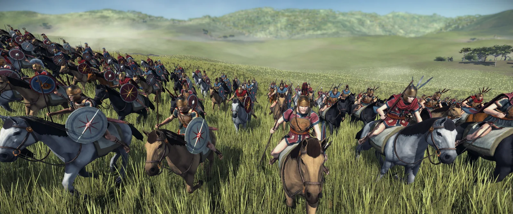
Campanian Cavalry
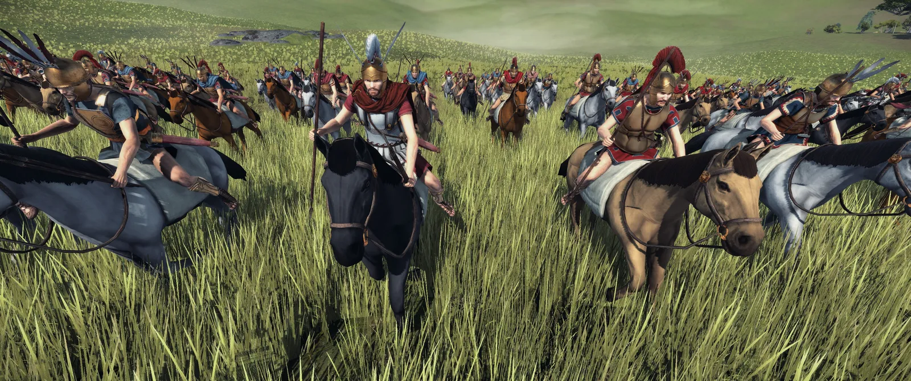
Campanian Heavy Cavalry
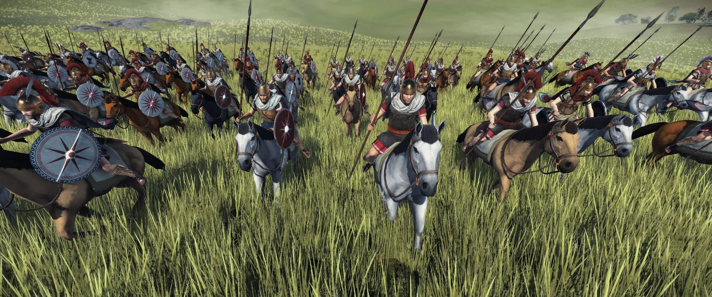
Oscan Light Cavalry
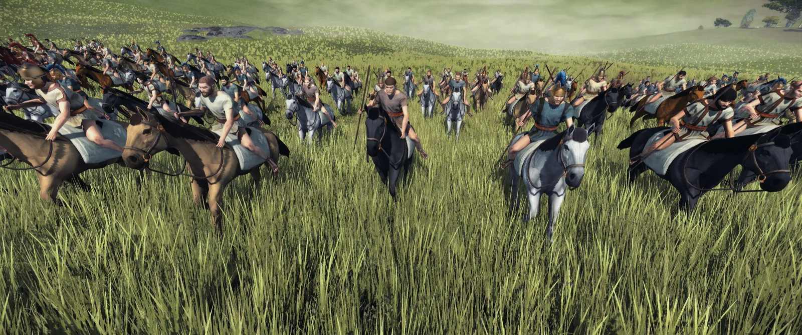
Some action shots:
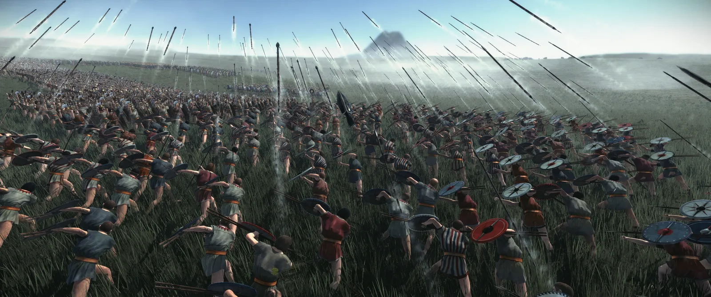
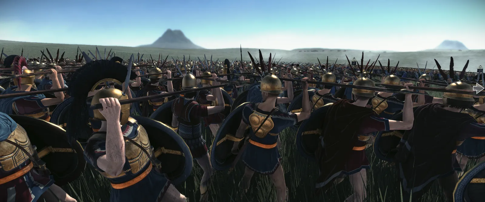
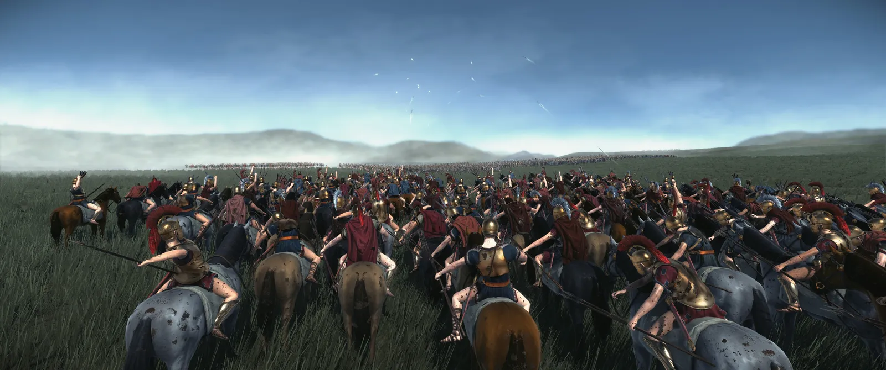
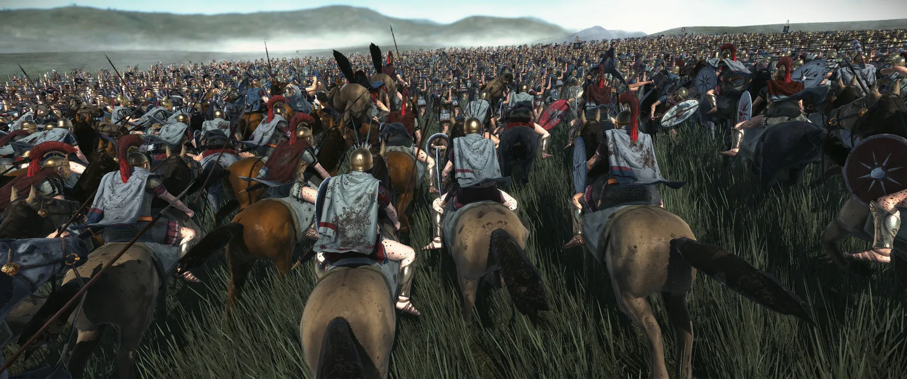
This concludes our Developer Diary for today! Discuss your thoughts and questions in a channel and see you next time!